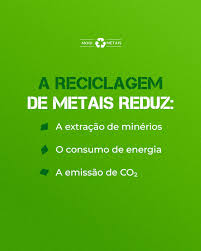

A reciclagem de metal é um processo essencial para a sustentabilidade, que consiste na coleta, separação, processamento (como trituração e fusão) e purificação de metais, permitindo que sejam reutilizados inúmeras vezes sem perder suas propriedades. Este ciclo de reaproveitamento economiza uma quantidade significativa de energia e água em comparação com a produção a partir do minério virgem, reduzindo os custos, o impacto ambiental da mineração e as emissões de gases de efeito estufa. Como funciona o processo Coleta: O processo começa com a coleta de materiais metálicos de diversas fontes, como embalagens (latas de alumínio e aço), eletrodomésticos, ferragens e sucata industrial. Separação: Os materiais coletados são separados por tipo de metal para garantir a pureza no processo seguinte. Processamento: Os metais são triturados para aumentar sua área de superfície, facilitando e otimizando o processo de fusão, que requer menos energia. Fusão e Purificação: O metal triturado é derretido em fornos. Após a fusão, ele é purificado para remover quaisquer impurezas, garantindo a qualidade do material para novas aplicações. Solidificação e Produção: O metal líquido purificado é então moldado em barras, chapas ou outros formatos e resfriado para solidificar. Ele está pronto para ser usado na fabricação de novos produtos, como novos latas, peças de automóveis e materiais de construção.
Reciclar metais economiza energia e reduz a extração de minérios.
Exemplos: latas de alumínio, tampas e peças metálicas.
⬅ Voltar